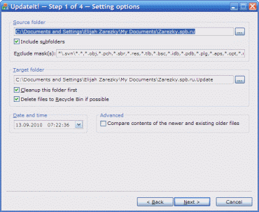
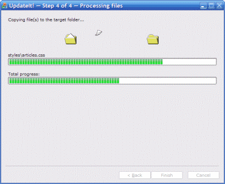

UpdateIt! — это приложение, предназначенное
для синхронизации содержимого исходной папки с другой (целевой) папкой, находящейся на
локальном компьютере или (и) FTP-сервере. Выполнено в виде „колдуна“, который
ищет в исходной папке (при желании — рекурсивно) все файлы, модифицированные позже
заданных даты/времени. Может скопировать найденные файлы (все или выборочно) в целевую
папку с сохранением исходной структуры вложенных папок. Позволяет закачать все файлы из
получившейся папки (с сохранением ее структуры) на заданный FTP-сервер; сжать получившуюся
папку в одноименный zip-архив; отослать этот архив на заданный адрес электронной почты.
UpdateIt! — это приложение, предназначенное
для синхронизации содержимого исходной папки с другой (целевой) папкой, находящейся на
локальном компьютере или (и) FTP-сервере. Выполнено в виде „колдуна“, который
ищет в исходной папке (при желании — рекурсивно) все файлы, модифицированные позже
заданных даты/времени. Может скопировать найденные файлы (все или выборочно) в целевую
папку с сохранением исходной структуры вложенных папок. Позволяет закачать все файлы из
получившейся папки (с сохранением ее структуры) на заданный FTP-сервер; сжать получившуюся
папку в одноименный zip-архив; отослать этот архив на заданный адрес электронной почты.
 При первом запуске приложения на
данном компьютере вам будет предложено указать свой адрес электронной почты и сервер
исходящей почты, которые необходимо использовать для отправки отчетов о сбоях в
работе (в случае их возникновения). Если вы не уверенны, какой сервер исходящей почты
указать, скопируйте его настройки из вашего почтового клиента по умолчанию. Указанный
адрес будет сохранен только локально и никогда не будет никуда отправлен или опубликован
где-либо. Но если вы все еще опасаетесь спама, воспользуйтесь адресом-фальшивкой типа
„anonymous@unknown.org“ и указывайте свой настоящий электронный адрес в
тексте набираемого вами описания возникшей ошибки.
При первом запуске приложения на
данном компьютере вам будет предложено указать свой адрес электронной почты и сервер
исходящей почты, которые необходимо использовать для отправки отчетов о сбоях в
работе (в случае их возникновения). Если вы не уверенны, какой сервер исходящей почты
указать, скопируйте его настройки из вашего почтового клиента по умолчанию. Указанный
адрес будет сохранен только локально и никогда не будет никуда отправлен или опубликован
где-либо. Но если вы все еще опасаетесь спама, воспользуйтесь адресом-фальшивкой типа
„anonymous@unknown.org“ и указывайте свой настоящий электронный адрес в
тексте набираемого вами описания возникшей ошибки.
Шаг 1: выбор исходной и целевой папок. На этом
шаге необходимо задать имя папки, в которой будет производиться поиск обновленных
файлов и имя папки, в которую они будут скопированы или перемещены. Кроме того,
необходимо указать дату и время, начиная с которых файлы будут считаться обновленными.
Если установить флажок Include subfolders,
то поиск файлов будет производиться рекурсивно — в исходной папке и всех папках,
находящихся внутри нее. В поле Exclude mask(s) можно задать
одну или несколько (разделенных запятыми) масок файлов, которые следует исключить из
поиска. Для целевой папки можно установить флажок Cleanup this
folder first; в этом случае все содержимое целевой папки предварительно будет
удалено (при установленном флажке Delete files to Recycle Bin if
possible, файлы будут „удаляться“
в Корзину, если ее использование разрешено системными
настройками). Флажок Compare contents of the newer and existing
older files позволяет исключить из результатов поиска те файлы, содержимое
которых не отличается от копий, находящихся в целевой папке.
 Шаг 2: просмотр списка обновленных файлов. На этом
шаге можно просмотреть список обновленных файлов, которые были найдены в исходной папке.
Для каждого файла выводится его имя, расширение, путь относительно исходной папки,
а также дата и время последнего изменения. Удалить файл(ы) из этого списка (и тем самым
исключить их из дальнейшей обработки) можно при помощи кнопки
Remove from list, предварительно выделив соответствующие
строки. Заметим, что файлы при этом удаляются только из списка, по-прежнему оставаясь в
исходной папке.
Шаг 2: просмотр списка обновленных файлов. На этом
шаге можно просмотреть список обновленных файлов, которые были найдены в исходной папке.
Для каждого файла выводится его имя, расширение, путь относительно исходной папки,
а также дата и время последнего изменения. Удалить файл(ы) из этого списка (и тем самым
исключить их из дальнейшей обработки) можно при помощи кнопки
Remove from list, предварительно выделив соответствующие
строки. Заметим, что файлы при этом удаляются только из списка, по-прежнему оставаясь в
исходной папке.
 Шаг 3: определение действий. На этом шаге
необходимо определить, что именно должно быть сделано с найденными файлами.
„Обязательным“ действием, выбираемым переключателями группы
Action to perform, является копирование или перемещение
файлов в целевую папку. Помимо этого, можно закачать ее содержимое (с полным сохранением
структуры) в заданный каталог на FTP-сервере; для этого необходимо установить флажок
Also upload file(s) to the FTP-server и заполнить поля
группы FTP Settings, указав адрес сервера и порт, а также
логин и пароль для доступа к нему. Установив флажок Also ZIP
folder with the copied/moved file(s), можно можно сжать целевую папку в
одноименный zip-архив. Получившийся файл может быть отправлен в виде вложения на
заданный адрес электронной почты; для этого необходимо установить флажок
Also send ZIPped folder via e-mail и заполнить поля группы
Mail Settings, указав адреса отправителя и получателя,
а также SMTP-сервер, который будет использоваться для отправки письма. Заметим, что эта
возможность доступна только в том случае, если ключ
HKEY_CURRENT_USER\Software\Elijah Zarezky\UpdateIt!\SMTP
системного реестра содержит численную величину Enable и ее
значение отлично от нуля.
Шаг 3: определение действий. На этом шаге
необходимо определить, что именно должно быть сделано с найденными файлами.
„Обязательным“ действием, выбираемым переключателями группы
Action to perform, является копирование или перемещение
файлов в целевую папку. Помимо этого, можно закачать ее содержимое (с полным сохранением
структуры) в заданный каталог на FTP-сервере; для этого необходимо установить флажок
Also upload file(s) to the FTP-server и заполнить поля
группы FTP Settings, указав адрес сервера и порт, а также
логин и пароль для доступа к нему. Установив флажок Also ZIP
folder with the copied/moved file(s), можно можно сжать целевую папку в
одноименный zip-архив. Получившийся файл может быть отправлен в виде вложения на
заданный адрес электронной почты; для этого необходимо установить флажок
Also send ZIPped folder via e-mail и заполнить поля группы
Mail Settings, указав адреса отправителя и получателя,
а также SMTP-сервер, который будет использоваться для отправки письма. Заметим, что эта
возможность доступна только в том случае, если ключ
HKEY_CURRENT_USER\Software\Elijah Zarezky\UpdateIt!\SMTP
системного реестра содержит численную величину Enable и ее
значение отлично от нуля.
Шаг 4: обработка файлов. На этом шаге можно наблюдать
за ходом копирования (или перемещения) обновленных файлов из исходной папки в целевую,
закачкой файлов из целевой папки на заданный FTP-сервер, сжатием целевой папки и отправкой
полученного архива на указанный ранее адрес электронной почты.
Системные требования:
- Windows 2000/XP/2003/Vista/7;
- некоторое количество свободной памяти.
Планы на будущее:
- сохранение „истории“ исходных и целевых папок;
- сохранение „истории“ адресов отправителя и получателя письма.
UpdateIt! Pro
 |
Этот „выпуск“ (edition) UpdateIt! имеет следующие отличия от
обычного:
- помимо стандартного Deflate, поддерживается метод сжатия BZip2, обеспечивающий более
эффективное сжатие, но проигрывающий по скорости работы (для распаковки таких архивов
необходимо использовать 7-Zip версии 4.5x и выше,
PKZIP версии 4.6 и выше либо
WinZip версии 10.0 и выше);
- поддерживается шифрование создаваемых ZIP-архивов методом AES
(с размером ключа 128, 192 и 256 бит), что обеспечивает повышенную защищенность зашифрованных
данных от несанкционнированного доступа;
- если количество сжимаемых файлов больше чем 65 535 или
размер архива должен превысить 4 гигабайта, то будет автоматически использован формат Zip64,
снимающий эти ограничения;
- исходный код приложения является закрытым (по причине
использования им полной коммерческой версии библиотеки
ZipArchive).
|
Экспорт/импорт настроек
Начиная с версии 1.0.2598, в приложении появилась возможность экспорта/импорта настроек
(только при работе под Windows 2000/XP), которая может быть полезна при переустановке
операционной системы. Соответствующие команды находятся в системном меню главного окна.
Заметим, что экспорт настроек возможен на любом этапе работы приложения, а импорт —
только на „нулевом“ шаге (страница Welcome!).
Ключи командной строки
Первая группа ключей позволяет задать имя исходной папки и условия поиска в ней файлов,
а также имя целевой папки и параметры работы с ней.
- SourceDir-Name:<имя_папки>
- Полное имя исходной папки, в которой должен производиться поиск обновленных файлов.
Если это имя содержит пробелы, то оно должно быть заключено в кавычки; в противном
случае, их использование является допустимым, но не обязательным.
- SourceDir-Recurce:<0|1>
- При значении этого ключа, равном 1, поиск файлов будет
производиться рекурсивно (в исходной папке и всех папках, находящихся внутри нее), а при
равном 0 — только в исходной. Любое другое значение
будет интерпретировано как 1.
- SourceDir-Exclude:<список_масок>
- Одна или несколько (разделенных запятыми) масок файлов, которые следует исключить
из поиска.
- TargetDir-Name:<имя_папки>
- Полное имя целевой папки, в котороую будет производиться копирование или перемещение
обновленных файлов. Если это имя содержит пробелы, то оно должно быть заключено в кавычки;
в противном случае, их использование является допустимым, но не обязательным.
- TargetDir-CleanupFirst:<0|1>
- При значении этого ключа, равном 1, целевая папка будет
полностью очищена перед началом копирования или перемещения в нее файлов, а при равном
0 — нет. Любое другое значение будет интерпретировано
как 1.
- UseRecycleBin:<0|1>
- При значении этого ключа, равном 1, удаление файлов из
целевой папки будет производиться в Корзину (если ее использование разрешено системными
настройками), а при равном 0 —
„безвозвратно“. Любое другое значение будет интерпретировано как
1.
- SourceDir-WriteTime:<дата_время>
- Дата и время модификации файлов в исходной папке, начиная с которых они считаются
обновленными.
- CompareContents:<0|1>
- При значении этого ключа, равном 1, и наличии в целевой
папке копии обновленного файла из исходной, копирование или перемещение будут выполняться
только в том случае, когда бинарное содержимое этих файлов различно — это позволяет
выполнять „разумное“ инкрементальное обновление целевой папки. Значение, равное
0, приведет к „безусловному“ выполнению файловых
операций. Любое другое значение будет интерпретировано как 0.
Вторая группа ключей определяет, какие именно действия нужно выполнить с найденными в
исходной папке обновленными файлами.
- MoveFiles:<0|1>
- При значении этого ключа, равном 1, обновленные
файлы будут перемещены из исходной папки в целевую, а при равном
0 — скопированы. Любое другое значение будет
интерпретировано как 0.
- UploadFiles:<0|1>
- При значении этого ключа, равном 1, обновленные
файлы будут загружены на заданный FTP-сервер, а при равном 0
— нет. Любое другое значение будет интерпретировано как
0.
- ZipFiles:<0|1>
- При значении этого ключа, равном 1, из целевой папки
будет создан архивный файл в формате ZIP, а при равном 0
— нет. Любое другое значение будет интерпретировано как
0.
- SendFiles:<0|1>
- При значении этого ключа, равном 1, архивный файл с
целевой папкой будет отправлен на заданный адрес электронной почты, а при равном
0 — нет. Любое другое значение будет интерпретировано
как 0.
Третья группа ключей задает FTP-серевер, на который производится загрузка обновленных
файлов, а также параметры взаимодействия с ним.
- FTP-Server:<имя_сервера>
- Имя FTP-сервера. Префикс; „ftp://“ указывать не нужно.
- FTP-Port:<порт>
- Порт, через который устанавливается соединение. Стандартным значением является
21.
- FTP-Login:<логин>
- Логин (имя пользователя).
- FTP-Password:<пароль>
- Пароль пользователя.
- FTP-Root:<имя_папки>
- Корневая папка на сервере, в которую необходимо загрузить файлы из целевой папки
на локальном компьютере (с сохранением ее структуры).
- FTP-UsePassiveMode:<0|1>
- При значении этого ключа, равном 1, будет
использован так называемый пассивный режим работы с сервером, а при равном
0 — обычный. Любое другое значение будет
интерпретировано как 0.
Четвертая группа ключей задает параметры SMTP-соединения, используемого для отправки
ZIP-архива с целевой папкой на заданный адрес электронной почты.
- SMTP-Enable
- Разрешить использование SMTP. Значение этого ключа игнорируется, поэтому указывать
его не имеет смысла.
- SMTP-From:<адрес_отправителя>
- Адрес электронной почты отправителя письма.
- SMTP-MailTo:<адрес_получателя>
- Адрес электронной почты получателя письма.
- SMTP-Subject:<тема_письма>
- Тема письма. Если в ней содержатся пробелы, то значение данного ключа необходимо
заключить в кавычки; в противном случае, их использование является допустимым, но не
обязательным.
- SMTP-Host:<имя_сервера>
- Имя SMTP-сервра, который необходимо использовать для отправки письма.
- SMTP-Port:<порт>
- Порт, через который устанавливается соединение. Стандартным значением является
25.
- SMTP-Authentication:<0|1|2|3|4>
- Значение данного ключа определяет метод аутентификации, используемый при доступе к
серверу. 0 соответствует отсутствию аутентификации;
1 — методу CRAM-MD5;
2 — методу Login;
3 — методу Plain;
4 — методу NTLM. Любое другое значение будет
интерпретировано как 0.
- SMTP-UserName:<пользователь>
- Имя пользователя (при использовании аутентификации).
- SMTP-Password:<пароль>
- Пароль пользователя (при использовании аутентификации).
- SMTP-UseSSL:<0|1>
- При значении этого ключа, равном 1, для соединения с
сервером будет использоваться так называемый „протокол защищенных сокетов“,
который гарантирует безопасную передачу данных по сети, комбинируя криптографическую
систему с открытым ключом и блочное шифрование данных. При значении, равном
0, будет использоваться обычный SMTP-протокол. Любое
другое значение будет интерпретировано как 0.
- SMTP-CharSet:<набор_символов>
- Кодировка тела письма (например, "windows-1251"),
которая будет указана в соответствующем SMTP-заголовке.
Пятая группа ключей задает параметры создания ZIP-архива с целевой папкой.
- ZIP-Method:<0|1>
- Метод (алгоритм) сжатия архива. 0 означает алоритм
„Deflate“, а 1 — алгоритм
„BZip2“. Любое другое значение будет интерпретировано как
0. Внимание: этот ключ распознается
только выпуском UpdateIt! Pro.
- ZIP-Compression:<0|1|2|3>
- Степень сжатия архива. 0 означает отсутствие сжатия;
1 — быстрейшее сжатие;
2 — сжатие по умолчанию (оптимальое по соотношению
скорости и степени); 3 — максимальное сжатие. Любое
другое значение будет интерпретировано как 2.
- ZIP-Encryption:<0|1|2|3|4>
- Метод шифрования архива. 0 означает отсутствие
шифрования, 1 — стандартное шифрование,
предусмотренное алгоритмом ZIP, а 2,
3 и 4 — шифрованием
методами AES-128, AES-192 и AES-256 соответственно. Любое другое значение будет
интерпретировано как 0. Внимание:
значения 2, 3 и 4 распознаются только выпуском UpdateIt! Pro.
- ZIP-Password:<пароль>
- Пароль на зашифрованный архив.
Шестая и последняя группа ключей задает различные общие параметры.
- Font-FaceName:<имя_шрифта>
- Имя шрифта, который будет использоваться окнами приложения. Значение этого ключа
используется только в том случае, если задан также и ключ
Font-PointSize, имеющий при этом корректное числовое
значение.
- Font-PointSize:<размер_щрифта>
- Размер шрифта (в пунктах), который будет использоваться окнами приложения.
Значение этого ключа используется только в том случае, если задан также и ключ
Font-FaceName.
- ResponseFile:<имя_файла>
- Имя текстового файла, содержащего остальные ключи командной строки для приложения.
Если путь к файлу не указан вообще, то будет считаться, что он находится в текущей
папке; если указан относительный путь, то будет считаться, что он указан относительно
текущей папки. Каждая строка такого файла может содержать, как один, так и несколько
ключей. Использование таких файлов позволяет создать неограниченное количество ярлыков,
предоставляющих быстрый доступ к типовым сценариям использования приложения. Если
в командной строке указан данный ключ, то все остальные ключи будут проигнорированы.
- DontSaveInput
- Не запоминать пользовательский ввод (как переданный через командную строку, так и
заданный при помощи графического интерфейса). Значение этого ключа игнорируется, поэтому
указывать его не имеет смысла.
На данный момент использование ключей командной строки не автоматизирует полностью
работу приложения, а только подставляет указанные параметры в соответствующие элементы
управления, позволяя максимально ускорить работу пользователя при наличии типовых
сценариев поиска и обработки обновленных файлов. Каждый из ключей может использоваться
независимо, если это не было оговорено иначе (как в случае с ключами
Font-FaceName и Font-PointSize).
Ключи командной строки в любом случае имеют больший приоритет, чем соответствующие
настройки, хранящиеся в системном реестре. Например, если командная строка содержит
ключ SourceDir-Recurce, имеющий некорректное для него
значение 4, а соответствующий параметр в системном
реестре имеет корректное значение 0, окончательным
„результатом“ будет 1, как интерпретация
значения ключа командной строки.
История версий
- 1.6.5842 (18.06.2011)
Динамические библиотеки CRT и MFC обновлены до версии 9.0.30729.6161; подробности
можно найти в Microsoft
security bulletin MS11-025: Description of the security update for Visual Studio 2008 SP1:
June 14, 2011.
- 1.6.5799 (08.05.2011)
Динамические библиотеки CRT и MFC обновлены до версии 9.0.30729.5570; подробности
можно найти в Microsoft
security bulletin MS11-025: Description of the security update for Visual C++ 2008 SP1
Redistributable Package. Библиотека
OpenSSL обновлена
до версии 1.0.0d от 8 февраля 2011 года.
- 1.6.5755 (27.03.2011)
Добавлена возможность визуального выбора целевой папки на FTP-сервере. Добавлена
возможность сохранения настроек произвольного количества FTP-серверов. Добавлен
«менеджер FTP сайтов». Компонент для отправки сообщений с использованием
протокола SMTP обновлен до версии 2.92
от 13 февраля 2011 года. Библиотека
OpenSSL обновлена
до версии 1.0.0c от 2 декабря 2010 года.
- 1.5.5433 (25.09.2010)
Улучшена обработка нештатных ситуаций при установке/удалении приложения. Значительно
усовершенствован механизм установки многоязыкового интерфейса. Улучшена обработка
кодировок отправляемых писем. Добавлена возможность отправки отчетов о сбоях посредством
электронной почты. Прекращена поддержка операционных систем Windows 98/Me. Исправлено
несколько ошибок в пользовательском интерфейсе. Обновлена документация для конечных
пользователей. Библиотека
ZipArchive
обновлена до версии 4.0.1 от 20 апреля 2010 года. Библиотека
OpenSSL обновлена
до версии 1.0.0a от 1 июня 2010 года. Разработка проекта „переведена“ под
MS Visual C++ 2008 SP1; начиная с этой версии, совместимость
исходного кода с компилятором Visual C++ 7.1 SP1 не гарантируется. Для сборки
этой версии из исходных текстов необходимо использовать проект
Repository ревизии 511 или
выше.
- 1.4.4324 (04.07.2008)
Исправлено несколько ошибок. Добавлен „выпуск“ (edition) UpdateIt!
Pro. Добавлена англоязычная пользовательская документация.
- 1.3.4134 (06.01.2008)
Добавлена возможность использования ключей командной строки. Улучшена проверка
корректности пользовательского ввода. Исправлено несколько некритичных ошибок.
Немного улучшена русскоязычная локализация инсталлятора. Библиотека
ZipArchive
обновлена до версии 3.2.0 от 15 декабря 2007 года. Библиотека
OpenSSL обновлена
до версии 0.9.8g от 19 октября 2007 года. Внимание:
для сборки этой версии из исходных текстов необходимо использовать проект
Repository ревизии 110
или выше.
- 1.2.3920 (16.10.2007)
Добавлена возможность задавать параметры архивации обновленных файлов: степень
сжатия и метод шифрования. Приложение пересобрано с версией 3.1.1 библиотеки
ZipArchive.
- 1.1.3870 (30.08.2007)
В приложение и его инсталлятор добавлена поддержка многоязычного интерфейса (на
данный момент поддерживаются английский и русский языки). Изначально язык выбирается
в процессе установки, но он может быть изменен в любой момент посредством пункта
Language / Язык системного меню.
- 1.0.3841 (01.08.2007)
Приложение пересобрано с версией 3.0.2 библиотеки ZipArchive.
- 1.0.3696 (16.03.2007)
Добавлена возможность аутенификации на SMTP-сервере, используемом для отправки письма;
поддерживаются методы SRAM-MD5, Login, Plain и NTLM. Добавлена возможность использования
SSL-соединения при работе с SMTP. Разработка проекта „переведена“ под
MS Visual C++ 7.1 SP1; начиная с этой версии, совместимость
исходного кода с компилятором Visual C++ 7.0 SP1 не гарантируется. Для сборки
этой версии из исходных текстов необходимо использовать проект
Repository ревизии 81 или
выше (в качестве альтернативы можно скачать так называемый „универсальный
вариант“ дистрибутива — он содержит абсолютно все исходные тексты, которые
необходимы для самостоятельной сборки приложения и его инсталлятора).
- 1.0.3410 (18.10.2006)
К приложению и его исходному коду добавлено лицензионное соглашение —
Apache License, Version 2.0.
Добавлен „универсальный“ инсталлятор, позволяющий выбрать один из
возможных типов установки (например, со всеми исходными тестами, необходимыми для
самостоятельной сборки приложения). Разработка проекта „переведена“ под
MS Visual C++ 7.0 SP1; начиная с этой версии, совместимость
исходного кода с компилятором Visual C++ 6.0 SP6 не гарантируется.
- 1.0.3346 (18.08.2006)
Добавлена возможность взаимодействия с FTP-серверами в так называемом „пассивном
режиме“ — флажок Use passive mode на шаге
Choosing an action (моя благодарность
Павлу Пименову за
„наводку“). Авторами улучшена реализация сжатия файлов в формате
ZIP и
отправки сообщений по протоколу
SMTP. Внимание:
для сборки этой версии из исходных текстов необходимо использовать проект
Repository ревизии 71 или
выше.
- 1.0.2800 (16.07.2005)
Добавлена поддержка „визуальных стилей“ Windows XP. Авторами улучшена
реализация сжатия файлов в формате
ZIP и
отправки сообщений по протоколу
SMTP.
- 1.0.2711 (23.04.2005)
Авторами улучшена реализация сжатия файлов в формате
ZIP и
отправки сообщений по протоколу
SMTP.
- 1.0.2598 (06.01.2005)
Добавлена возможность экспорта/импорта настроек приложения (только при работе под
Windows 2000/XP). Немного „улучшено“ системное меню.
Автором исправлено несколько ошибок в коде,
реализующем поддержку протокола SMTP.
- 1.0.2461 (29.12.2004)
Добавлена документация пользователя в формате HTML Help. Перед
установкой данной версии настоятельно рекомендуется штатным образом деинсталлировать
предыдущую.
- 1.0.2297 (25.07.2004)
Исполняемый файл приложения откомпилирован с оптимизацией по размеру.
- 1.0.2283 (11.07.2004)
Добавлена возможность сравнивать содержимое обновленных файлов с их старыми копиями,
находящимися в целевой папке.
- 1.0.2260 (20.06.2004)
Исправлено несколько орфографических ошибок на странице
Welcome!.
- 1.0.2259 (19.06.2004)
Автором исправлено несколько ошибок в коде,
реализующем поддержку протокола SMTP (этот код используется при отправке архива,
содержащего обновленные файлы, на заданный адрес электронной почты).
- 1.0.2172 (28.03.2004)
Исправлена очень глупая ошибка, из-за которой приложение не реагировало на системные
запросы при выполнении файловых операций. Исправлена ошибка, приводившая к некорректному
восстановлению пароля для доступа к FTP-серверу. Добавлена возможность минимизации окна
приложения.
- 1.0.2171 (27.03.2004)
В список обновленных файлов на странице Selecting files
добавлена колонка Size, отображающая их размер в байтах;
в колонке Name этого списка теперь выводятся не только
имена файлов, но и системные иконки, соответствующие их типам; добавлена возможность
сортировать список как по возрастанию, так и по убыванию. Программа установки теперь
записывает в системный реестр значение по умолчанию для масок файлов, которые должны
быть исключены из поиска.
- 1.0.2169 (25.03.2004)
Добавлена возможность задавать одну или несколько масок файлов, которые следует
исключать из поиска. При открытии диалога выбора папки в дереве теперь автоматически
выделяется элемент, соответствующий папке, имя которой указано в поле ввода.
- 1.0.2159 (15.03.2004)
Предусмотрено шифрование пароля для доступа к FTP-серверу при записи его в системный
реестр.
- 1.0.xxxx (??.??.????)
История не сохранилась. По всей видимости, первой стабильной версией, годной к
практическому использованию, была 1.0.1646…
UpdateIt! на Google Code
Начиная с декабря 2007 года, проект UpdateIt!, помимо „родного“ сайта, размещен
также и на Google Code; его главная страница доступна
по адресу http://update-it.googlecode.com.
Там можно найти как последние „опытные сборки“ (development builds), так и зеркало
репозитория Subversion с последними ревизиями
исходных текстов проекта. Для анонимного доступа на чтение к этому зеркалу и получения
локальных копий всех файлов, необходимых для самостоятельной сборки, необходимо выполнить
следующие действия:
- Создать где-либо в файловой системе новую папку, назвав ее,
например, GoogleCode.
- Перейти в эту папку в командной строке и последовательно выполнить
команды
svn checkout http://repositorium.googlecode.com/svn/trunk/ Repository
svn checkout http://update-it.googlecode.com/svn/trunk/ UpdateIt
После этого, для сборки проекта достаточно открыть файл
UpdateIt.2008.sln из папки
GoogleCode\UpdateIt в среде Microsoft Visual Studio 2008,
сделать UpdateIt „стартовым проектом“ и выполнить команду
Build Solution. Полностью автоматизированную сборку проекта и
его дистрибутива можно выполнить при помощи утилиты
NAnt, передав ей на вход файл
UpdateIt.2008.build — выполнять соответствующую команду
нужно из Visual Studio 2008 Command Prompt, предварительно перейдя в папку
GoogleCode\UpdateIt.
Авторские права © 2002—2011 Илья Зарецкий